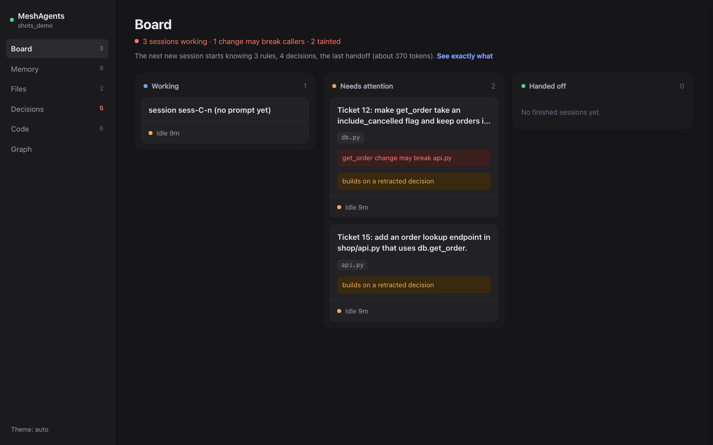
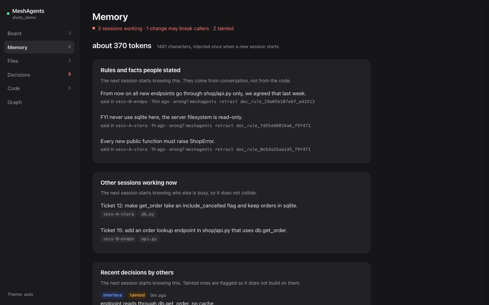
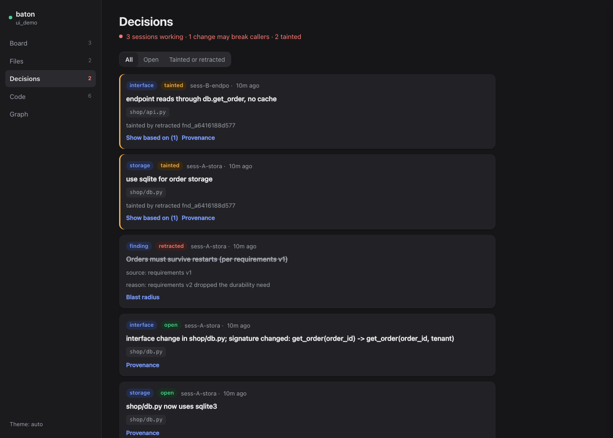

0 of 10 → 9 of 10
clean runs when three sessions add discount, tax and a report to the same code.
A shared memory for coding helpers on the same project. They warn each other before a clash, and the next session starts out knowing what the last one was told.

Warns before a clash
When another session is working in the file you are about to edit, you hear about it first. Change how a function is called, and you are told which callers elsewhere may now break.
[] Possible collision on shop/db.py: another live session is working in it now (Ticket 12: make get_order take an include_cancelled flag).
[] You changed how shop/db.py is called (get_order: new required parameter). Callers elsewhere that may now break:
- shop/api.py (another session is working in it now)
Update them or keep the old call shape working.
Files that usually change with shop/db.py: tests/test_db.py (9 of 11 commits), shop/api.py (7 of 11 commits).
Remembers and hands over
What changed, why, and the rules people stated once ("never use sqlite here") are kept. The next session begins with the unfinished job and those rules, with nothing for you to write up.

Costs about the same
The first version made helpers do more work. The shipped one is at parity, and because fewer runs need redoing, each clean result costs less. Each step takes about 0.1 s.
Without vs with , from recorded runs.
Stays in your control
The board only reads. Everything runs on your machine. If the database is down, it stays quiet and your session carries on. A wrong note can be taken back, and you see everything built on it.

The numbers
Every figure below is drawn from our recorded test runs. Where something did not work, it says so.
Plain words: three sessions adding discount, tax and a report to the same code went from 0 clean runs in 10 to 9 in 10. No test level got worse, one stayed equal, and the stock-reservation test (L6) is still not fixed.
How we measured: each of 9 test levels, 10 runs per side, same model and code. Gap +26.7 points (95% range +13.3 to +40.4, p < 0.001). Only L3 is significant on its own. Limits.
Plain words: it matches a notes file that a person keeps perfectly up to date, with nothing for you to maintain, and costs less per success than doing without. Where nothing needs remembering it costs about 7% more per run, with the same results.
How we measured: a first session is told something once, then a second session that was not told must finish the job. 150 runs, 3 setups; four tasks that need the fact, 40 runs each. Two of those tasks are built so a session with no memory cannot know the fact, so its low score is partly by design. Limits.
Plain words: the first version made helpers do +31% more work. The shipped version is at parity, and each clean result costs about 29% less because fewer runs have to be redone. Each hook call takes about 0.1 s, it never blocks a session if something fails, and there were 0 hook errors across the evaluation runs.
How we measured: from recorded runs, list-price estimates. Cost per run alone was $0.0090 with it vs $0.0085 without (+6%, not significant). Turns were 0.99x of no plugin.
Plain words: learned from your git history with no setup. When a hint is shown it is right about 2 times in 3 (66.5% at the looser setting). The stricter shipped setting is right 73% of the time and speaks up on 17% of edits.
How we measured: offline on 6 real open-source Python projects, 2,716 held-out cases; bars compare only the cases where a hint is shown. This measures prediction, not bugs avoided. Lookup takes 0.3 ms; the first index of 800 commits takes 0.2 to 0.3 s.
Results wall
0 of 10 → 9 of 10
clean runs when three sessions add discount, tax and a report to the same code.
3 of 10 → 7 of 10
clean runs. Better, but not significant on its own.
0 of 10 → 10 of 10
second sessions that finished the job, with no memory vs with it.
0 of 10 → 8 of 10
kept "no sqlite". A later re-check on the final code gave 10 of 10.
0 of 10 → 10 of 10
A hand-kept notes file got 9 of 10.
about 3 ms
to find exactly the notes built on it, on 25 test graphs. A plain search found 65% when sources are cited in mixed styles.
66.5% right
when a hint is shown, from git history alone, on 6 real open-source projects.
8 of 24 → 20 of 24
clean runs (33% to 83%) on three test levels. Each clean run cost $0.115 instead of $0.314 at list prices. Gap +50 points, 95% range +25 to +72.
1 of 10
Two sessions both adding the same stock reservation (L6). The warning arrives too late for that overlap.
Your estimate
Move the sliders. This is an estimate built from our test results, not a promise.
Real projects collide less often than our tests, so the default of 20% is deliberately modest.
Sessions per month = sessions per week × 4.33 (52 weeks in 12 months, an assumption).
Clean-finish improvement = collision share × 26.7 points.
Reruns avoided per month = sessions per month × collision share × 26.7%.
Money saved per month = sessions per month × collision share × cost per session × 29% (the cost-per-clean-run reduction, applied only to the collision share).
How it works
Small hooks in Claude Code note which files a session is in, what it changed and what you told it.
Before an edit, a session is told who else is there and what changed nearby. Changes and rules are kept.
When one ends, it leaves a handoff. The next one begins with the unfinished job and the rules.
Without the graph there is nothing to ask. The product answers questions like:
Simplified. Full diagram, every property and the measured latencies are in docs/FALKORDB-DEEP-DIVE.md. Query times, tiny graph, one machine: files-that-change-together lookup 0.3 ms; retraction blast radius about 3 ms.
MATCH (t:Task {status: 'claimed'})-[:TOUCHES]->(a:Artifact)
WHERE a.path IN $paths AND t.owner <> $actor_id AND t.lease_until >= $now
RETURN t, a.path
MATCH (root:Finding {id: $id})<-[:BASED_ON*1..]-(d:Decision)
RETURN DISTINCT d
MATCH (c:Symbol)-[:CALLS]->(s:Symbol) WHERE s.path = $path AND s.qual IN $quals AND c.path <> $path RETURN s.qual, c.path, c.qual ORDER BY c.path
MATCH (a:Artifact {path: $path})-[r:CO_CHANGED]->(b:Artifact)
WHERE r.n >= $min_n AND r.ratio >= $min_ratio
RETURN b.path, r.n, r.ratio ORDER BY r.ratio DESC LIMIT $lim
When the store cannot be reached, the hooks print nothing and never block your session.
Try it in 2 minutes
The demo plays out two sessions on a small shop project and prints what each one would be told.
Questions
Each step takes about 0.1 s, and it never blocks a session. Total AI work was 0.99x of no plugin in turns.
Claude Code today, through hooks, with an optional MCP server for explicit use. Tested with two Claude models; edits made through the Edit tools and through shell commands are both tracked. Nothing else is claimed.
Into a FalkorDB graph on your own machine. Nothing leaves it, and the board is read-only and local.
It stays out of the way: the hooks print nothing and your session carries on.
Partly. We measured strong wins in constructed tests, on one small project with two models. Real projects collide less often than our tests. Read the fine print.
Nothing to run beyond FalkorDB. The AI work per run is about the same: $0.0090 with it vs $0.0085 without, which was not a significant difference.
The fine print
The numbers above are real. Here is exactly how far they go.
Our tests are made to make sessions collide. Real projects collide far less often, so this shows it helps when collisions happen, not how often they happen.
One small test project, two models (a cheap one and a stronger one; the stronger one was tested on 3 levels, 8 runs each), and the tasks and scoring were written by the same person. Some levels were used to tune earlier versions, and the pooled number mixes tuned and untuned levels. On the stronger model the first version did nothing, because that model edits files through shell commands, which the first version could not see. We fixed that and re-tested.
L6, where two sessions both add the same stock reservation, finished clean only 1 time in 10. The warning arrives too late for that kind of overlap.
A hand-kept notes file, kept perfectly, scored 92% against 95%. The difference is that nothing needs maintaining. And since two of the four tasks cannot be solved without a remembered fact, the no-memory score is low by design. We do not know how often real work needs one.
That the "callers that may now break" warning improves results (it fired 1 time in 40 trials), and that the files-that-change-together hints prevent bugs. They predict; they were not measured on bugs avoided.
The calculator multiplies our test gap by your own inputs. It is a rough guide, and your real result may be smaller or zero.